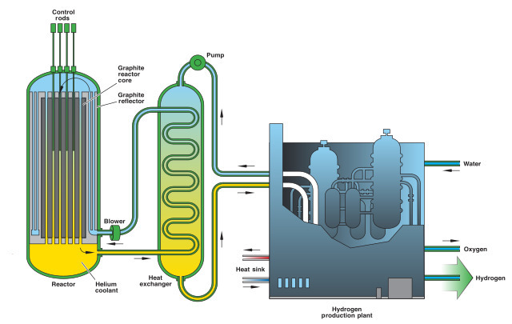

Thermo-Chemical Water Splitting
Solar
Thermochemical water splitting uses high temperatures—from concentrated solar power or from the waste heat of nuclear power reactions—and chemical reactions to produce hydrogen and oxygen from water. This is a long-term technology pathway, with potentially low or no greenhouse gas emissions [3].
Thermochemical water splitting processes use high-temperature heat (500°–2,000°C) to drive a series of chemical reactions that produce hydrogen. The chemicals used in the process are reused within each cycle, creating a closed loop that consumes only water and produces hydrogen and oxygen. The necessary high temperatures can be generated [by] concentrating sunlight onto a reactor tower using a field of mirror "heliostats,"
Numerous solar thermochemical water-splitting cycles have been investigated for hydrogen production, each with different sets of operating conditions, engineering challenges, and hydrogen production opportunities. In fact, more than 300 water-splitting cycles are described in the literature.
Two examples of thermochemical water splitting cycles [are] the "direct" two-step cerium oxide thermal cycle and the "hybrid" copper chloride cycle...
Exciting progress continues in this field, leveraging synergies with concentrated solar power technologies, and with emerging solar-fuel production technologies.
Nuclear, Molten Salt
A molten salt reactor (MSR) is a class of nuclear fission reactor in which the primary nuclear reactor coolant and/or the fuel is a molten salt mixture... 1960's Molten-Salt Reactor Experiment aimed to prove the concept of a nuclear power plant which implements a thorium fuel cycle in a breeder reactor [4]. Increased research into Generation IV reactor designs began to renew interest in the technology, with multiple nations having projects and, as of September 2021, China is on the verge of starting its TMSR-LF1 thorium MSR..
A further key characteristic of MSRs is operating temperatures of around 700 °C (1,292 °F), significantly higher than traditional LWRs at around 300 °C (572 °F).. economical hydrogen production
Thorium is three to five times more abundant than uranium in the earth's crust.. produces less radiotoxicity than the U02 because it produces fewer amounts of actinides, reducing the radiotoxicity of long life nuclear waste. Th02 has higher corrosion resistance than U02, besides being chemically stable due to their low water solubility. The burning of Pu in a reactor based in thorium also decreases the inventories of Pu from the current fuel cycles, resulting in lower risks of material diversion for use in nuclear weapons [5].
Nuclear, HTGR
High-Temperature Gas-cooled Reactors (HTGR) use helium instead of water to cool the nuclear fission reaction, and its inherently safe design protects it against meltdowns as seen previously in Three Mile Island, Chernobyl, or Fukushima. The fissile material, the fuel is kept in a new design called TRISO that streamlines the usage of the fuel, helps with its disposal, and guards against most form of proliferation. The high temperatures enable applications such as process heat or hydrogen production via the thermochemical sulfur–iodine cycle [1].
Helium is an inert gas, so it will generally not chemically react with any material. Additionally, exposing helium to neutron radiation does not make it radioactive, unlike most other possible coolants.

Even during the loss of the helium gas coolant initiated by piping rupture events, the heat produced by the core will be removed by heat dissipation from reactor pressure vessel so that the fuel will not failure. This means that the HTGR has significant safety which has no concern of core meltdown or radioactivity release accidents [2].
From the economic point of view, HTGR is a superior nuclear reactor since it can reduce extra facilities due to its inherent safety and achieve high thermal efficiency due to the high temperature heat. The power generation cost of the HTGR power plant is estimated to be about 0.029 USD/kWh [whereas] power generation cost of commercial light water reactor is about 0.037 USD/kWh.
References
[1] Wikipedia
[2] JAEA
[3] DOE
[4] https://en.wikipedia.org/wiki/Molten_salt_reactor
[5] PDF